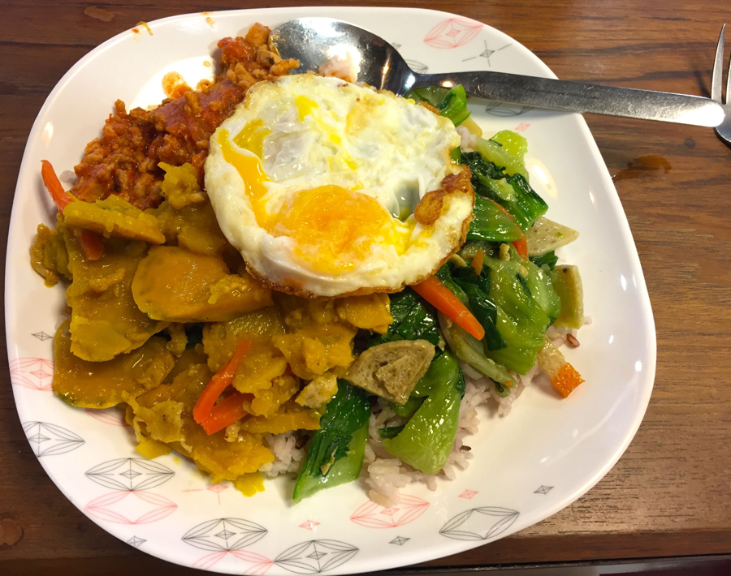
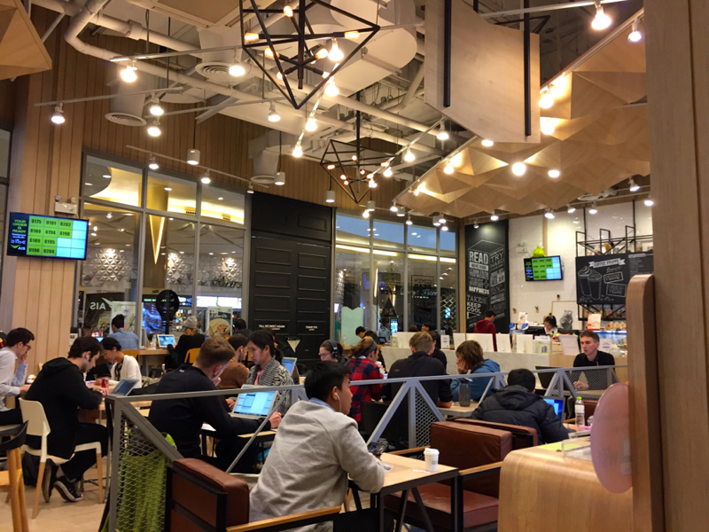

Chiang Mai - digital nomad paradise
General information about Chiang Mai
- Where: northern Thailand
- Population: around 1 mio. people (Chiang Mai metropolitan area)
- Specialty: #1 home base of many Digital Nomads
- Average temperature: 77F
Why is it such a great place for digital nomads?
Cheap => high standard of living
Chiang Mai is quite inexpensive, that’s why you can easily afford a comfortable lifestyle including hourly long massages. You never need to do laundry, cook food or clean your appartment by yourself. Read the section “Cost of living report” for detailed information.Great weather
The average temperature in Chiang Mai is 77F. The sun is shinning most of the time.Healthy AND affordable food
Most of the Thais are in a pretty good shape because of their healthy food. For 50 Baht/$1.5 you can get a pretty delicious and healthy meal.Local people are kind-hearted
The locals in Chiang Mai are friendly and laid back. They seem to live more on a day to day basis and just enjoy their life. They avoid arguments and “smile” all upcoming problems away.Great infrastructure
In Chiang Mai there are several co-working spaces (> 5) with fast and reliable internet. Besides, there are also plenty of beautiful coffee shops (> 25) where you can work as well.Inspiring Digital Nomad/Entrepreneur community
There are lots of other nomads who really WANT to talk to you and exchange tips and tricks. If you are in the traditional nomad business (copywriting, dropshipping, SEO), Chiang Mai is a great place to meet likeminded people. Once every year a conference called Nomad Summit takes place in Chinag Mai. I attended in 2016 and had a great time. As the people in the video explain, people from all levels of success can get something out of the conference.
Get things done athmosphere
People come to Chiang Mai to get things done and not to party. Together they create a very creative and motivating athmosphere.
Cost of living report
Rent
 I stayed at the Bliss Hotel which offers serviced appartments. That means it’s like a normal hotel room, but instead of cleaning your room once per day they clean it once per week.
I stayed at the Bliss Hotel which offers serviced appartments. That means it’s like a normal hotel room, but instead of cleaning your room once per day they clean it once per week.Distance to my gym: 400m
Distance to my co-working space: 400m
Distance to healthy and inexpensive food: 400m (food court)
Distance to dry cleaner: 40m1 month: 12.000 Baht/$370 ea.
3 months: 9000 Baht/$275 ea.Food
As I have already mentioned the local food is healthy and inexpensive. Mostly it’s a mix of veggies and rice.Meal with rice, tofu, tomatos, brokkoli, potatoes and one egg: 60 Baht/$1.8 (see picture)

Phone plan
The digital infrastructre in Chiang Mai is on par with western infrastructure. I bought a monthly phone plan, which means I could quit each month. It was 12gb highspeed internet for 860 Baht/$26.Co-working space
There are several Co-working spaces in Chiang Mai. I used to work at C.A.M.P. It’s free.
Laundry
I usually dropped of my laundry in the morning and got it back in the evening. A medium sized back (clothing for one week) is about 50 Baht/$1.5.Massage
A one hour Thai Massage is about 200 Baht/$6.Gym
I chose a totally overpriced gym (Touch fitness) only because it was so convenient for me. The gym is in walking distance to the hotel I mentioned bfore and has a sauna and a steaming room. Besides, all machines are new, the staff is helpful and it never got crowded. You pay for what you get: 3000 Baht/$91 per month.Scooter
I only rented a scooter once for two days. Everything I needed was in walking distance. Whenever I wanted to go somewhere else I just took a red cab which took me anywhere for 100 Baht/$3 (often way less). Renting a scooter will cost you around 1000 Baht/$30 per week.Going out
I came to Chiang Mai to get things done, not to go clubbing. So I only went clubbing 5 times or so. One night is usually around 500 Baht/$15 all in (pregame at a bar, cab, cover).
Summary
- Rent: 12,000 Baht
- Food: (60 Baht x 3 + 100 Baht for Drinks) x 30 = 8200 Baht
- Phone: 880 Baht
- Gym: 3000 Baht
- Laundry: 50 Baht x 4 = 200 Baht
- Massage: 200 Baht x 4 = 200 Baht (once per week)
- Going out twice per month: 500 Baht x 2 = 1000 Baht
In total: 25,480 Baht per month
25,480 Baht = $780 (28/12/2017)
25,480 Baht = 650 Euro (28/12/2017)
Again the gym is totally overpriced! If you stay for three months, it gets even cheaper (rent goes down). In case you spend $1000 Dollar per month, you will live like a king.
Helpful summary
- Hotel (serviced appartment): the Bliss Hotel
- Co-working space: C.A.M.P.
- Phone plan: AIS (Go to Maya Center 3rd floor)
- Food: basement of Maya Center (vegetarian place)
- Gym: Touch Fitness
When is good time to go to Chiang Mai?
I would avoid January till March/April. This period is called burning season. Local farmers burn their fields which causes bad air quality. Besides burning season, Chiang Mai is worth a visit all year long.
Chiang Mai as a team?
Chiang Mai is an awesome place for a team. Actually I saw quite a lot of startup teams. Go there, have fun and extend your runway!
As always, I would love to hear your feedback!
Shoot me an email: info(at)janruettinger.com